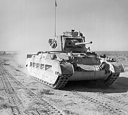

The Matilda II, officially known as the Infantry Tank Mk II, was a British heavy infantry tank that became famous during the early years of World War II, especially in the North African Campaign. Designed for close infantry support, it prioritized armor protection over speed, embodying the British infantry tank doctrine. The Matilda II earned the nickname “Queen of the Desert” for its outstanding performance during Operation Compass (1940–41), where it dominated Italian forces. However, it became obsolete as German tanks and guns improved, and its slow speed limited its tactical flexibility. By 1943, it was replaced by faster and better-armed tanks like the Churchill and Cromwell, though it remained a symbol of early British tank success.

- Characteristics:
- Type: Infantry tank
- Weight: 27 tons
- Crew: 4
- Armament: 40mm OQF 2-pounder; 2 x 7.92mm BESA
- Speed: 24 km/h